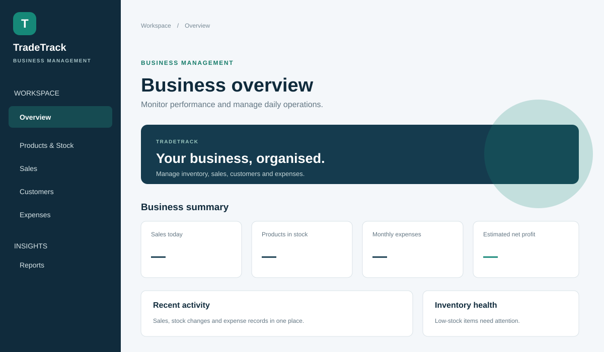

Product catalogue
Create and update products with SKUs, categories, units, cost prices, selling prices, and stock quantities.
03 / SMALL BUSINESS TOOLS
A small-business management application that brings product records, inventory, sales, customers, expenses, and reports into one workspace.
THE PROBLEM / THE APPROACH
Small businesses often need to keep track of several connected activities: which products are available, what has been sold, who purchased an item, what expenses were recorded, and how the business performed during a selected period.
I built TradeTrack as a single workspace for these operations. Product and sales records connect to inventory changes, while expenses and report filters help organize the figures needed for day-to-day decisions.
CORE FEATURES
Create and update products with SKUs, categories, units, cost prices, selling prices, and stock quantities.
Search products, filter by category or stock status, and identify low-stock or out-of-stock items.
Record sales with multiple products, discounts, customer selection, and item-level price snapshots.
Maintain customer contact details and notes, with support for registered customers and walk-in sales.
Record expense categories, dates, payment methods, descriptions, and references.
Filter sales and expenses by date range, review business figures, and export report records to CSV.
INTERFACE ILLUSTRATION
This custom illustration communicates the main dashboard areas described in the project README. It is an illustrative preview, not a direct screenshot of the running application.

TECHNICAL DETAILS
TradeTrack uses ASP.NET Core Razor Pages and C# for its server-side application, Entity Framework Core for database access, and MySQL for relational data. The frontend uses HTML, CSS, and JavaScript. Sales processing validates product availability and updates inventory as part of the transaction. Report calculations use saved item-cost snapshots so later product cost changes do not rewrite historical sale costs.